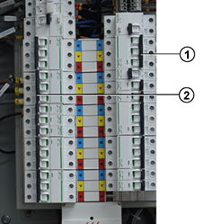

Removal of the Circuit
Breaker.
-
Switch the power for the Main Distribution Board (MDB) off.
-
Open the MDB
to gain access to the Circuit
Breaker (see Figure 1).
Figure 1. Circuit
Breakers

- 1
- Circuit Breaker
- 2
- Circuit Breaker
-
Note all cable connections to the Circuit Breaker.
-
Remove the power cable of the Circuit Breaker IN and OUT.
-
After removing the cables pull down the DIN rail clip and
pull it out from the DIN rail.
-
Remove the Circuit
Breaker from the MDB.